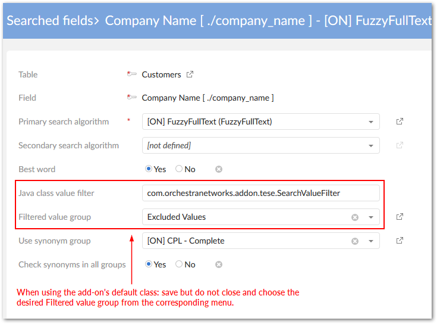

The add-on allows you to omit values from search results on a field-by-field basis. Indicate the values you want to omit by:
Creating a list of the values to omit in one of the following ways:
Navigate to Administration > Data quality & analytics > EBX® Information Search Add-on > Configuration and use the Filtered value and Filtered value group tables to create values and group them together. Use a field's configuration settings to point to this group. When a user runs a search that includes this field, none of the results specified in the group display.
Create your own Java class that implements the SearchTextNormalize interface and lists the values you want to filter.
Open a field's configuration settings and in the Value filter by Java class enter:
com.orchestranetworks.addon.tese.SearchValueFilter (if you used the add-on to create values and groups)
The name of your custom class. When using this option, you can save and close out of the configuration.
Save, but do not close the configuration to display the Filtered value group drop-down menu.
From the Filtered value group menu, select the group of values you want to exclude from this field's search results.

Save and close out of the configuration.